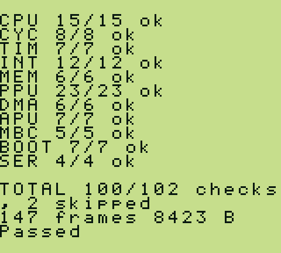
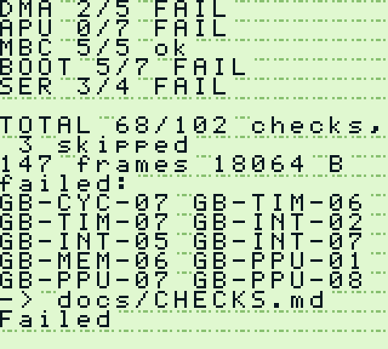

Project · Test cartridge
GBSelfTest
One file. Boot it on any emulator or on a real console and it runs 102 checks unattended, then reports the verdict twice — as text on the screen, and as the same text out of the link port so a machine can read it with nobody watching. No host, no reference images, no setup. And not one expected value in it was measured from an emulator.
Measured 24 Aug 2026. The spread is the property this project exists to have — a suite everybody passes measures nothing.
SameBoy · the reference

Peanut-GB · built for speed

What it does
The rule
No expected value from an emulator
Every expectation is one of two things.
- Computed a second, independent way on the machine itself. The adder
is checked against a counter built from
INC HL, which sets no flags and goes through a different unit. The logic operations are checked against De Morgan's law. The rotates are checked by the fact that eight of them are the identity.DAAis checked against decimal arithmetic done a digit at a time - A documented constant that is a fact about the hardware — a register's read-back mask, an instruction's published cycle count, the 456 cycles in a scanline
- A behaviour that can be checked neither way is listed as untested, with the reason, in the coverage statement the cartridge prints at the end of every run
The report
A code, a measurement, somewhere to read
- The screen is 20 columns by 18 rows, so it carries the area verdicts and a list of codes. The link port carries the whole story
- Each failure names what it saw, what it wanted, a hypothesis about the missing behaviour in hardware terms, and a URL
- Codes are never reused and never renumbered, so one printed by a two-year-old build still means what it meant
- A host that only wants the verdict can stop at
PassedorFailed— Blargg's convention, so an existing runner needs no changes
What it can see
Rendering, without a framebuffer
- A cartridge cannot see the screen. But mode 3 lasts exactly as long as the fetcher takes, and the fetcher takes longer when there is more to draw
- So the cartridge lays out a scene whose cost is documented and measures how long mode 3 actually took — a real test of rendering with no reference image in it
- A coincidence interrupt is armed on one scanline; the handler runs a
variable number of
NOPs before readingSTATonce, and a binary search finds the machine cycle the mode changes on. The delay from interrupt to firstNOPis unknown and does not matter, because every result is the difference between two edges - In practice this is the most discriminating thing here: it separates a renderer that draws a whole line at once from one that models the fetcher
What nobody else checks
Catching a shortcut, not just a mistake
An emulator that advances its peripherals once per instruction still runs every clock at the right rate. The frame is still 70,224 cycles, the timer still ticks correctly, the interrupt still arrives exactly once. Nothing measured over a run of instructions can see it. Two checks look at phase inside an instruction instead:
GB-CYC-07reads one register twice from the same starting phase, once with a three-cycle instruction and once with a four-cycle one. Over four one-cycle delays the longer must overtake the shorter exactly once. A batched machine sees both reads at the instruction's start, and it never overtakesGB-CYC-08lets the timer overflow inside a sled ofNOPs and has the handler read the return address, which names the instruction the interrupt landed on. Entering one cycle later must move that landing back by one instruction, eight times over. On a batched machine the landing stops moving
The scoreboard
Not a league table. Every implementation here is doing what it set out to do — TerminalGB's two rows are one emulator with two renderers behind it, and the eight-row gap between them is the fetcher model alone. Peanut-GB is built to run a Game Boy on a microcontroller. These rows are the range the checks can tell apart.
| Implementation | Result |
|---|---|
| SameBoy, DMG | 100 / 102, 2 skipped |
| SameBoy, MGB (Pocket) | 100 / 102, 2 skipped |
| SameBoy, CGB-E | 97 / 102, 5 skipped |
| SameBoy, AGB | 98 / 102, 4 skipped |
| TerminalGB, per-dot renderer | 94 / 102, 2 skipped |
| TerminalGB, whole-scanline renderer | 86 / 102, 3 skipped |
| Peanut-GB | 68 / 102, 3 skipped |
A skip is not a pass and not a failure. Two of the 102 report rather than judge — they print the number they saw and leave the verdict to a reader who has hardware, because no published reference settles the right answer. The rest are rules that do not apply to the console in the slot. Each prints its own reason, so a skipped row is never silent.
What a check has to be
- Self-verifying. Its expected value is computed on the machine or is a documented hardware constant. If you had to measure it on an emulator to find out what it should be, it does not go in.
- Discriminating. A careful implementation and a rough one give different answers.
- Explained. One line saying what behaviour is missing, in hardware terms
an author can act on. A check that only says
FAILis half a check. - Bounded. It cannot hang. Anything that waits for an event waits with a limit; anything waiting for an event a broken machine might never deliver first checks that the machine can deliver it, and skips if not.
Limits worth knowing
-
The mode-3 technique measures durations, not content. TerminalGB's
double-speed bug changed only which tile source the fetcher read from at a given
dot — not how long anything took, not any readable register.
GB-PPU-07checks the general fact that bug depended on and cannot check the bug itself, and no rewording of a timing check ever will. That one needs Mealybug or a screenshot. - A failing run costs more than twice a passing one. The SameBoy DMG transcript is 8,423 bytes and the Peanut-GB one is 18,064. At the link port's 8,192 bits a second that is about eight seconds against eighteen. The explanations are the product, and they cost.
- The TerminalGB rows are pinned to an old revision, old enough to predate accuracy work those very checks prompted, so they score below what a current build passes. Re-pinning moves every row in the table at once.
Writing
-
A hundred checks in one session
A new check found a real bug in TerminalGB on the day it was written — one that thousands of rows across five public suites could not see, because of the shape they have.
-
Three ways this cartridge was wrong about itself
A verdict decided by which checks failed above it, a subroutine that ate a measurement, and two checks that skipped on every console, forever.
Where these numbers come from
The scoreboard was measured on 24 Aug 2026 by the project's own
tools/scoreboard.sh, which runs every row and names the exact revision
of each emulator: SameBoy 213a12c, TerminalGB 2467c65,
Peanut-GB 8e65698. Nothing is vendored — each runner fetches, pins and
builds its own emulator. Both screenshots come straight out of the emulators' own
framebuffers and CI fails if they have drifted from what a run produces.
The cartridge contains no third-party source, no boot-ROM extract and no game data: the font is drawn for it, the register definitions are written out from the public-domain Pan Docs, and the whole thing is MIT so anybody can take it, ship it and change it.